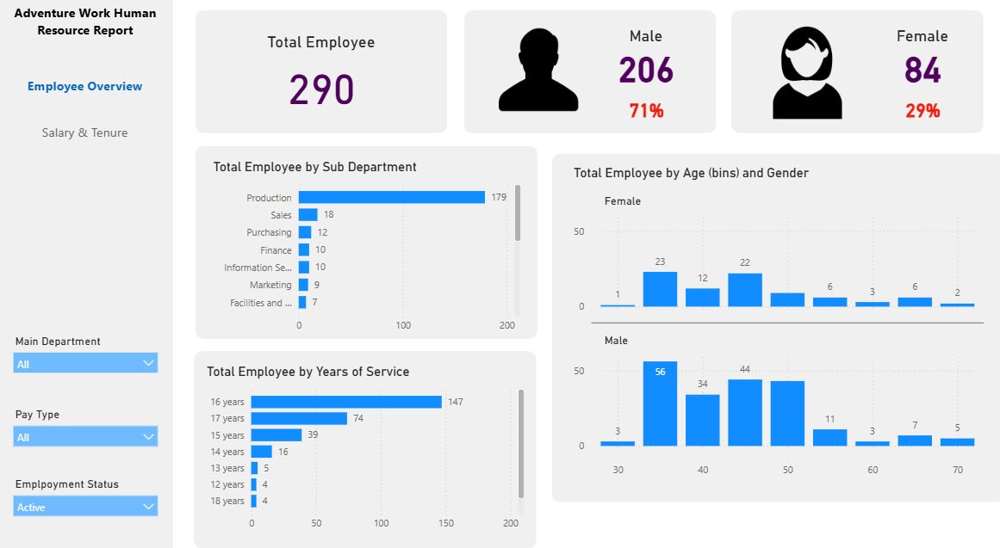
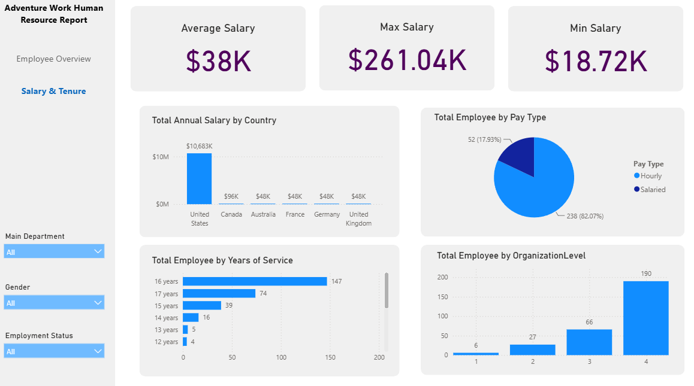
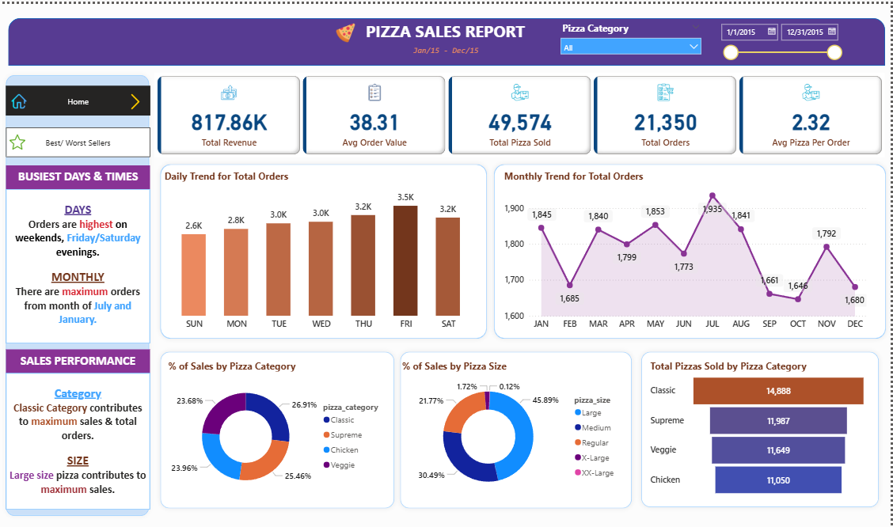

An interactive Power BI dashboard designed to analyze employee demographics,
workforce distribution, salary, and tenure. The report explores employee
composition by department, gender, pay type, years of service, and
organizational level.

In this project, I used SQL to explore and analyze pizza sales data. The analysis involved calculating key performance metrics such as total revenue, average order value, total pizzas sold, total orders, and average pizzas per order. I also examined order trends by day and month, sales distribution by pizza category and size, and identified the best and worst-selling pizzas based on revenue, quantity sold, and number of orders.
The SQL queries provided insights into customer preferences, high-performing products, and seasonal sales patterns, forming the analytical foundation for the Power BI dashboard I created.

In this project, I cleaned and analyzed pizza sales data, then built an interactive Power BI dashboard to visualize key business insights. I designed multiple pages to display KPIs, daily and monthly trends, sales by category and size, and the best/worst-selling products. The goal was to help stakeholders understand customer preferences, optimize the menu, and make data-driven decisions.

I developed a 2D game in Unity where players catch falling stars and avoid bombs using a basket together with my team memebers for a group project
This Unity-based game is a maze-style adventure with two levels, where players must find hidden switches to unlock doors. I worked with another team member to
design and develop Level 2, including the layout of the maze and the placements of switches and enemies. This project helped me understand basic game mechanics, level design, and working collaboratively in a developmenet environment.